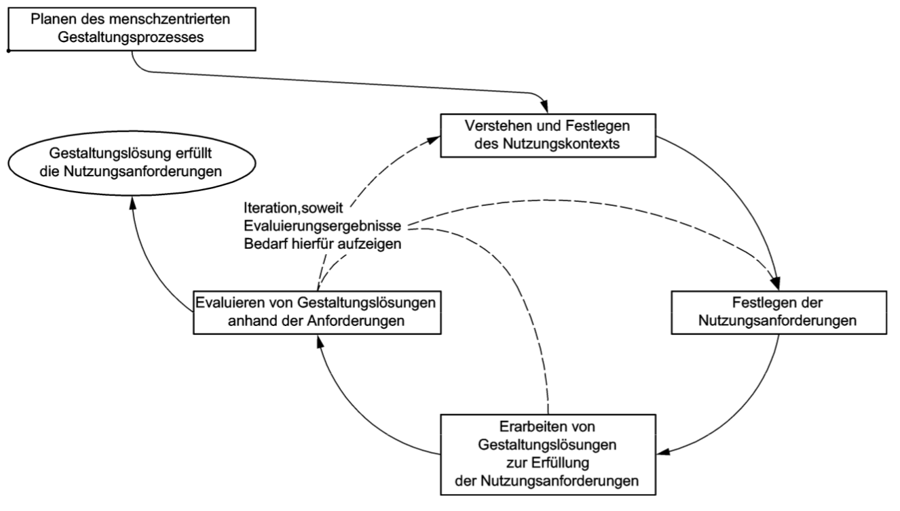
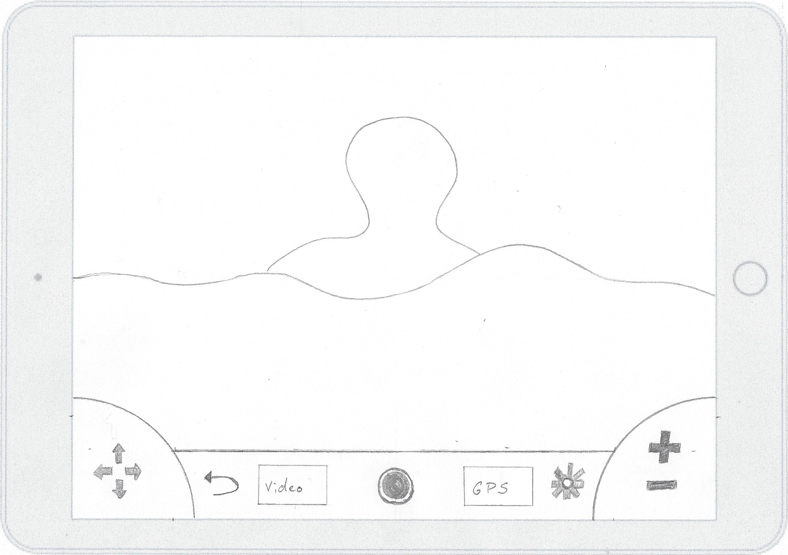
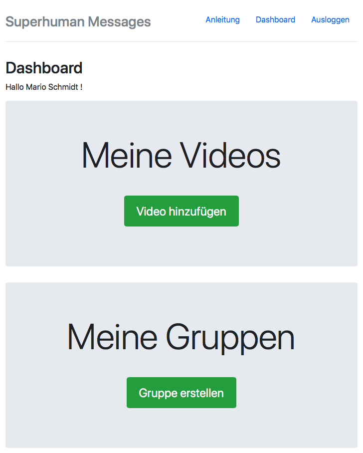
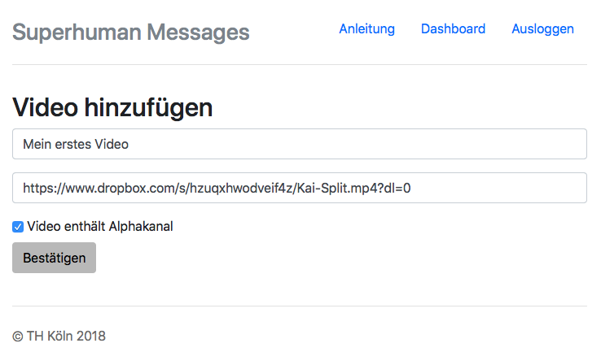

Kolloquium
Entwicklung einer Augmented Reality App zur Videoprojektion unter Berücksichtigung menschzentrierter Gestaltungskonzepte
Mario Schmidt
27.02.2018
Projektidee
Videos von Personen auf oder hinter einem Horizont darstellen
Berücksichtigung menschzentrierter Gestaltungskonzepte
Was brauchen/wünschen/erwarten die Benutzer?
Theoretische Grundlagen
Menschzentrierte Gestaltungskonzepte
- Discount Usability Engineering
- Usability Engineering
- Usability Engineering Lifecycle
- DIN EN ISO 9241 - Teil 210
... aufgabenorientierte Gestaltung hier nicht sinnvoll.
DIN EN ISO 9241-210

Augmented Reality
- Abgrenzung der Technologie: VR / MR
- Realisierung der Technologie: Vuforia
- Popularität der Technologie: aktuelle Trends
Analysephase
Jede Person stellt einen potentiellen Benutzer dar.
Evaluation durch Benutzer
- System aus dem Praxisprojekt
- Probanden mit unterschiedlichen Merkmalen
- Einteilen der Benutzer in Gruppen
- Think Aloud und Paperbased Prototyping
- Ermittlung der Benutzungsanforderungen
Jeder Benutzer erhält ein eigenes Benutzerkonto.
Konzeption
Entwicklung der Gestaltungslösungen

Zusätzliches Web-Interface

Realisierung
Architekturmodell
Verwendbarkeit von Videodateien
Verwenden von YouTube Quellen
Dateiupload selbst verwalten
DropBox Videodateien

Live Demo
Ergebnisse
Evaluation
Erweiterung der Grundfunktionalitäten konnte umgesetzt werden.
Nicht alle Funktionalitäten konnten umgesetzt werden.
Erneute Evaluation nach der Realisierung bestätigt bisherige Ergebnisse.
Möglichkeiten des Systems
Anpassung des Systems auf bestimmten Nutzungskontext
Eingrenzung der Benutzer
Erweiterung der Funktionen